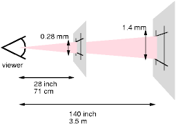
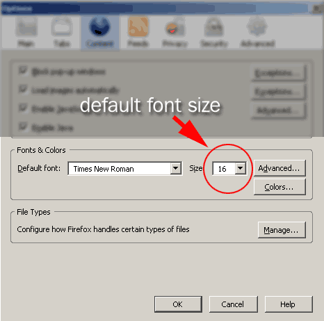
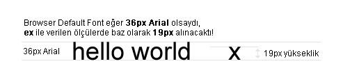

Web Geliştirme Eğitimi Dersleri, 005
28 Aralık 2007, Cuma
Renk Tanımlamaları ve Sistemleri
Renkler R - G - B ( RED/KIRMIZI , GREEN/YEŞİL , BLUE/MAVİ ) sisteminden oluşur. Her renk elektronu için maksimum 256 ( 0 - 255 arası ) ton tanımladığımız için, toplamda 3 BYTE kullanırız. Her byte = 8 BIT olduğu için, 3 x 8 = 24 BIT olur.
1 BYTE = 8 BIT = 11111111 = 255 ( 0 ile beraber = 256 renk ) 3 BYTE = 24 BIT = 111111111111111111111111 = 16.777.215 ( 0 ile beraber = 16.777.216 renk ) 4 BIT = 1111 = 15 = F 3 TANE 4 BIT = 12 BIT
3 tür’de renk tanımlanır;
24bit Hex
Renk değeri, 0-255 arası ifade edilir. Rengin 256 tane tonu olur. 0 = 00 , 255 = FF. Her renk elektronu 8 BIT ile ifade edilir.
- span { color: #ff0000; } /* KIRMIZI = 255 , YEŞİL = 0 , MAVİ = 0 */
- span { color: #ffff00; } /* KIRMIZI = 255 , YEŞİL = 255 , MAVİ = 0 sonuç = SARI*/
12bit Hex
Renk değeri, 0-15 arası ifade edilir. Rengin 16 tane tonu olur. 0 = 0 , 15 = F. Her renk elektronu 4 BIT ile ifade edilir.
- span { color: #f00; } /* KIRMIZI = 15 , YEŞİL = 0 , MAVİ = 0 */
- span { color: #ff0; } /* KIRMIZI = 15 , YEŞİL = 15 , MAVİ = 0 sonuç = SARI*/
24bit Decimal
Aynı 24Bit Hex gibi 0-255 arası ifade edilir sadece yazılım şekli 10’lu sisteme göredir ve komut farklı yazılır.
- span { color: rgb(255 , 0 , 0 ); } /* KIRMIZI = 255 , YEŞİL = 0 , MAVİ = 0 */
Ölçü Birimleri ve Ölçü Sistemi
Uzunluk, genişlik, yükseklik gibi, boyut yada pozisyon işlemlerinde kullandığımız birimlerdir.
- px : pixel ( piksel )
- em : font-size ( varsayılan font boyuna göre )
- ex : x-height ( font yüksekliğine göre ** )
- in : inch : ( inç )
- cm : centimeters ( santimetre )
- mm : millimeters ( milimetre )
- pt : pointes ( punto, 1 punto = 1 inç’in 1/72’si )
- pc : picas ( 1 pica = 12 punto )
- % : percentages ( Yüzde ile göreceli )
Linkler
px
PIXEL anlamındadır. ( Piksel ) En çok kullandığımız ve kullanacağımız ölçü birimidir. Piksel büyüklüğü, görüntülenen cihaza bağlıdır. Eğer bu cihaz bir bilgisayar monitörü ise, o monitörün çözünürlüğüne bağlı olarak ( Desktop ölçüleri ve ekran DPI bilgisine göre ) değişim gösterir.

Cihaza göre piksel tanımlanması ( w3c )

Referans ve Cihaz arasındaki ilişki - dot oluşumu ( w3c )
em
User Agent’ın ( kısaca UA : Kullandığımız browser ne ise ) default ( varsayılan ) font’u baz alınır. Örneğin Firefox’un ayarlarına baktığınızda aşağıdaki gibi ( eğer daha önce siz değiştirmediyseniz ) 16px görebilirsiniz.
Keza, browser’dan re-size edilebilir. ( IE / FF için : View > Text Size )

Default Firefox Setup Ekranı
- /* Kullanıcının Browser’ında, default
font-size’ının 14px olduğunu düşünelim. */ - div { font-size: 1em; } /* 1em = 1 x 14px = 14px */
- p { font-size: 0.75em; } /* 0.75em = 0.75 x 14px = 10.5px */
ex
İlgili element için tanımlanan font-family’nin ilk parametresine bağlıdır. ( font-family: 'Arial','Tahoma'; şeklinde bir deklarasyon var ise, ilk parametre Arial fontu olur. )
Font boyu, ilgili font tipi içindeki harflerden küçük harfle x harfine göre hesaplanır. Yani yükseklik olarak x referans seçilir. ex kullanmak için illada içinde küçük x harfi geçen font-family seçme mecburiyeti yoktur. ( Yani font-family olarak Webdings kullansanız bile ex’i ölçü olarak kullanabilirsiniz. )

in , cm , mm
in İNÇ anlamındadır. 1 inch = 2,54 cm ( santimetre )
cm bildiğimiz santimetre anlamındadır. Print-Out işlemleri için kullanılır.
mm bildiğimiz milimetre anlamındadır. 10 mm = 1 cm. Print-Out işlemleri için kullanılır.
pt , pc
1 pt = 0,138 in = 0,03 cm
Sans-Serif type için 12 pt ( punto ) default.
1 pc = 12 pt
%
Elementin parentNode’una göre, göreceli olarak ölçünün belirlenmesidir.
- #canvas { width: 500px; }
- #canvas #box { width: 50%; }
- /* id’si canvas olan elementin altındaki id’si box olan elementin boyu 500px’in %50’si olur = 250px */